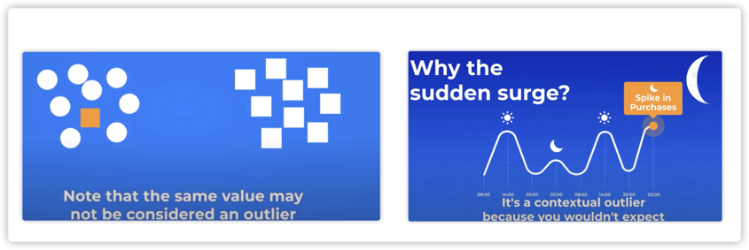
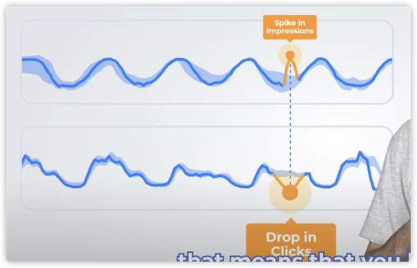

异常检测的难点
业务共性
- 历史数据有中断—使用正常数据填充
- 不同业务曲线对告警的敏感度不一样
- 新接进来业务，历史数据太少
- 新接业务没有故障
某些业务特有
- 整体趋势变化：比如游戏在线人数进入开学季之后会持续走低，业务觉得很正常，不要告警（一般算法都要告警）。
- 定时任务日志数：周期性凸起，业务说不要告（但是一般的算法都会告）
- 无规律指标的异常识别：常见于刚上线的大区，不稳定。
- 周期性毛刺点并且间隔不固定：数据质量问题。
- 稀疏数据：比如成交数据，商品只在某个固定时间上架。
异常分类
全局异常
- 全局异常点有点像黑天鹅事件，是过去从未发生过的。

条件异常
条件异常(contextual or conditional anomalies)：value deviates quite a lot from the rest of the data points，举2个例子：
- 办公室出现了一个穿西装打领带的人，跟我们格格不入，但是放到另外一个context中，比如房屋中介行业很正常
- 凌晨销量突然升高

联合异常
每一个点不是异常的（既非 contextual 也非 global），但是一起出现就异常了，例如
- 一个小区中，有人去医院很正常，但是整个小区的人同时去医院就不正常了。
- 投放广告时，预算增加，曝光和点击同时上升是很正常的。但是曝光增加，点击却下降（市场营销策略失灵--glitch）就意味着有问题，可能是广告中心设置了一个空的广告位，或者将广告曝光给了错误的用户。 
用户在使用过程中的疑问
模型开发者
模型开发者关心的是
- 为什么告警？
- 告警时，知道特征有什么变化，在模型输出的时候，把特征也带上
- 屏蔽周期性的告警
模型应用者
模型服务的使用者关心的是
- 应用时的阈值的修改记录在哪看？
- 当前模型是不是最新版本？
- 为什么告警？
- 模型开发者需要在输出中加入告警描述字段
- 可视化saas，对告警的决策逻辑进行解释，eg上下界
- 这么多模型，我该选择哪一个？
- 业务相关的需求：
- 屏蔽周期性的告警。
参考资料
- https://www.youtube.com/watch?v=pXGqDiE4N0I